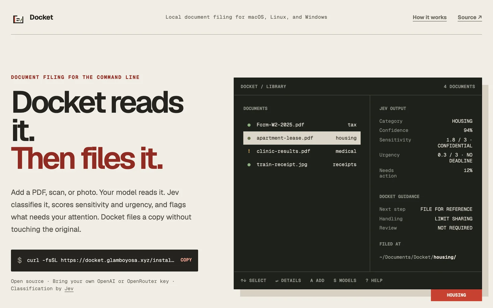

体験
判断の値と、そこから導いた扱いの案内が、別の欄に分かれている。「JEV OUTPUT」は判断そのもの、「DOCKET GUIDANCE」はアプリが決めた次の手順である。
- 原本には触れず、写しを整理する。分類を誤っても、元の文書は元の場所に残る。
- 確信度の低い分類は、見直しの対象として印が付く、と調査の記録にある。見本でも、「Review」の行が、見直しの要否を明示している。
- 機密度と緊急度を、分類と別の軸で評価している。「どこにしまうか」と「どう扱うか」を分けている。
- 文字を読む処理は外部のモデルに送られる。何がどこへ送られるかを、製品サイトが最初に断っている。私的な文書を扱う道具として、要になる開示である。
- 分類を利用者が直す操作や、直した結果の扱いは、この作業では確かめていない。
キャプチャ
{kind=link}

（原寸の画像を開く）見る箇所左の説明文（モデルが読み、Jevが分類し、機密度と緊急度を評価し、注意が要るものに印を付け、原本に触れずに写しを整理する）、右の見本の「JEV OUTPUT」（Category、Confidence、Sensitivity、Urgency、Needs action）、「DOCKET GUIDANCE」（Next step、Handling、Review）、「FILED AT」、下端のキー操作
入力から画面の変化まで
-
判断への入力
PDF、スキャン、写真。製品サイトの説明では、利用者が用意したモデル（OpenAIまたはOpenRouterの鍵）が文書を読み、その文章がJevの判断に渡る。
-
Jevの判断
見本の「JEV OUTPUT」は、Category HOUSING、Confidence 94%、Sensitivity 1.8 / 3 · CONFIDENTIAL、Urgency 0.3 / 3 · NO DEADLINE、Needs action 12%。分類、段階の評価、はい・いいえの確率が並ぶ。
-
結果がUIをどう変えるか
左に文書の一覧と分類（tax、housing、medical、receipts）。注意が要る文書には「!」の印が付く。「DOCKET GUIDANCE」は、次の手順（FILE FOR REFERENCE）、扱い（LIMIT SHARING）、見直しの要否（NOT REQUIRED）を示す。「FILED AT」に、整理先のパスが出る。
- 判断型の見立て
- 複合推定
- 製品サイトの見本の欄に、分類と確信度、3段階の評価、割合が並ぶことからの見立て。画面には質問型の名前が出ていない。
Jevとの適合
文書の文章に対して、分類、段階の評価、はい・いいえを同時に返す使い方は、Jevの型に収まる。しきい値の判定と保存は手元で行う、と投稿は説明している。ただし、型としては既存の文書分類の事例と同じで、この事例に固有なのは、端末の画面であることと、読む処理と判断の処理を分けて開示している点である。
確認範囲と未確認事項
調査監査の評価はC（索引向け）。実装は実在するが、文書の分類と確信度による見直しという型は、既存の「JEV Document Classification」の事例とほぼ重なる。この事例は、その比較対象として置く。掲載した画面は製品サイトを開いた直後の状態で、そこに描かれた端末の画面は製品サイト上の見本である。実際に文書を取り込む流れは確認していない。PDFや画像から文字を読む処理は、Jevではなく別のモデル（OpenAIまたはOpenRouter）が行う。
- 確認済み2026-09-21に取得した製品サイトの初期画面（説明文、見本の端末画面の各欄、インストールのコマンド、「Classification by Jev」の表記）。調査監査（2026-09-21）が、投稿の4枚の画像とリポジトリで、文書の一覧と絞り込み、分類と確信度、機密度、緊急度、見直しの印、モデルの選択を確認したという記録
- 未検証実際に文書を取り込む流れ、分類を直す操作、確信度のしきい値、外部のモデルに送られる内容の範囲、リポジトリのコード（このサイトの作業では開いていない）、投稿の画像
- 推定扱い質問型（複数の問いの組み合わせと見立て）。見本の欄に、分類と確信度、段階の評価、割合が並ぶことからの見立てで、画面には質問型の名前が出ていない
- 引用製品サイト画面を2026-09-21に必要範囲で取得。権利は作者に帰属する